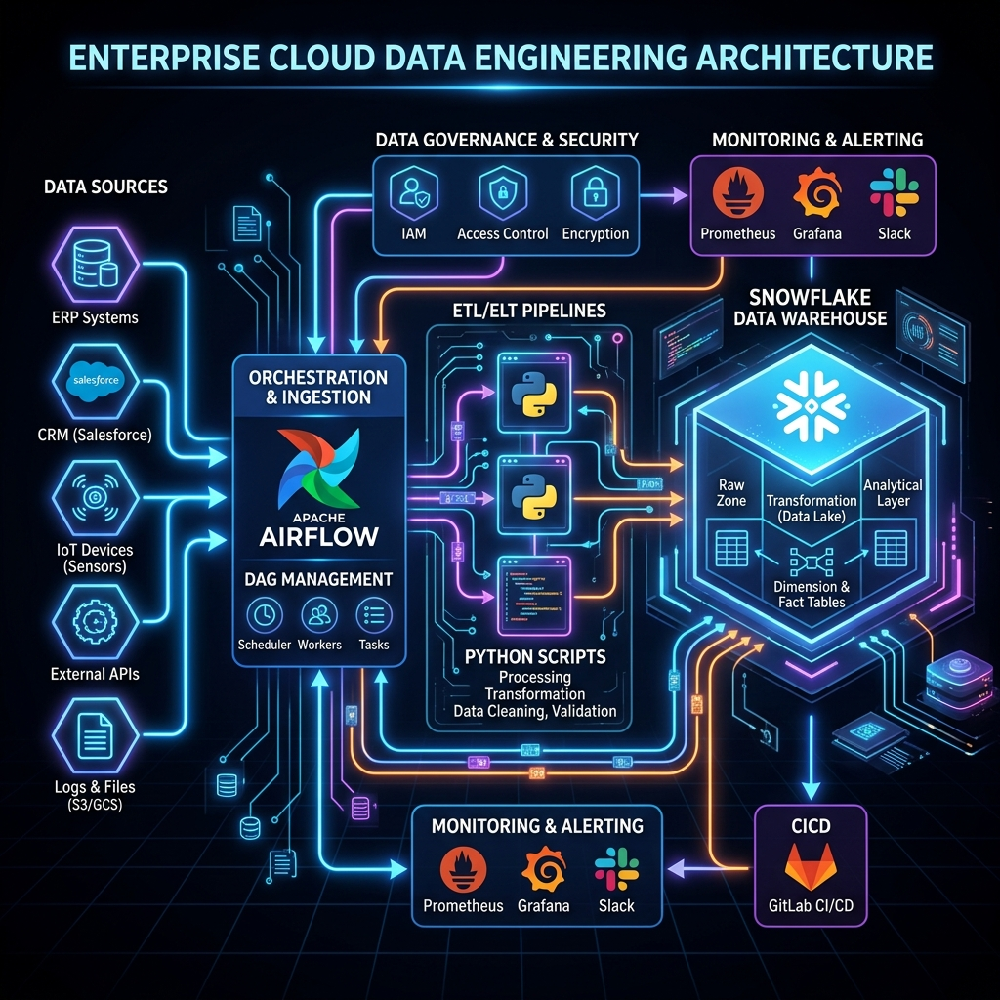

Specializing in high-availability ETL architectures, robust data pipelines, and database query optimizations that support SaaS leaders and business intelligence suites.

Scaling operations means preparing for failures, logging parameters, checking schemas, and respecting delivery SLAs.
We define strict pipelines metrics (e.g. data latency, daily completeness thresholds) to ensure business reporting triggers on schedule.
Integrating centralized logging services and structured metrics (AWS CloudWatch, Datadog) to audit workflow health.
Real-time failure alerting utilizing PagerDuty or Slack Webhooks, providing complete traceback logs instantly to debug execution snags.
Secure credential handling using cloud secret stores (AWS Secrets Manager, Vault), encrypting database variables both in-transit and at-rest.
Enforcing checks using Great Expectations or custom Pydantic schemas to automatically reject corrupted raw payloads.
Containerizing python environments to prevent 'works on my machine' bugs, guaranteeing identical execution on AWS, Azure, or Kubernetes.
Use the slider tool below to compare a typical spreadsheet business data cycle with our automated ecosystem.
Our structured, 5-phase engineering protocol guarantees reliable data and clean, readable codebases.
We map out all API fields, data models, compliance requirements, and latency targets. We analyze sample payloads to discover edge cases.
We sketch out the data flows, orchestrator configurations, cache structures, schema checks, and query indices. No code is written before client alignment.
Writing testable Python modules and DAG definitions. Raw data inputs are normalized and schema validations (Pydantic / Great Expectations) are integrated.
Orchestrating container pipelines using Docker and deployment configurations on cloud infrastructure like AWS (ECS, Lambda, RDS).
Wiring slack hooks and metrics log dashboards. Any pipeline exceptions are caught instantly with full alerts routed to engineering teams.
Reliable stats showing our data handling capabilities.
Book an audit session to identify bottlenecks in your database schemas, serverless execution runs, and ETL latency configurations.